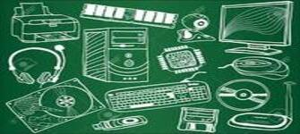
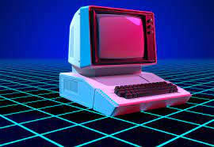

In this case, we leave the computer to go abroad, because these are one of the most important parts of the computer. Without them, we wouldn't be able to see what we're doing on our computers, enter data into them, and I couldn't even be writing this page.
Peripheral is understood to be the units or devices that allow the computer to communicate with the outside, that is, both enter and externalize information and data. Peripherals are those that allow the operations known as input/output (I/O) to be performed.
Although "accessories" are strictly relevant, many of them are critical to the proper function and operation of the modern computer; for example, the keyboard, the mouse, the hard disk and the monitor are currently essential elements; but they are not, for example, a scanner or a plotter. To illustrate this point: in the 80s, many personal computers did not use a hard disk or mouse (or mouse), they were normally operational with only one or two floppy drives, the keyboard and the monitor as the only peripherals (even without a floppy drive).
